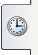
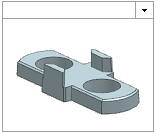
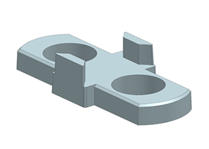
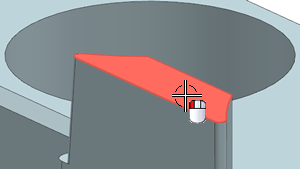
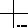
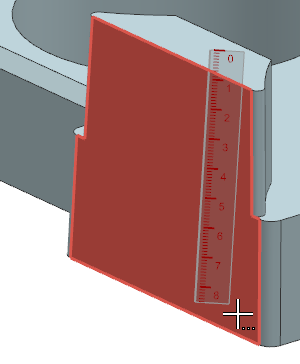
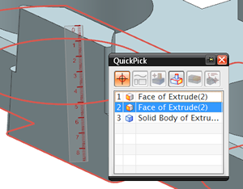
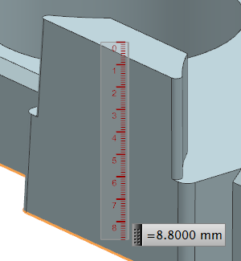

点击资源条上的历史记录  选项卡，并打开上一个练习中保存的电池垫片副本，或者打开 des07_battery_spacer_01。

如果打开的是提供的部件，选择文件→另存为以保存一个副本，将 des07替换为您的名字首字母缩写。
NX 将在基本环境应用模块中打开该部件。

点击实用工具工具条上的测量距离 。
选择如图所示的凸起顶部。

如图所示，将光标悬浮在凸起底部，直到出现快速选择光标 ，然后不移动鼠标单击。

在快速选择对话框中，选择面/拉伸 (2)以选择位于部件底部的面。

NX 将显示测量的距离为8.8 mm。
